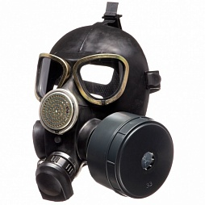
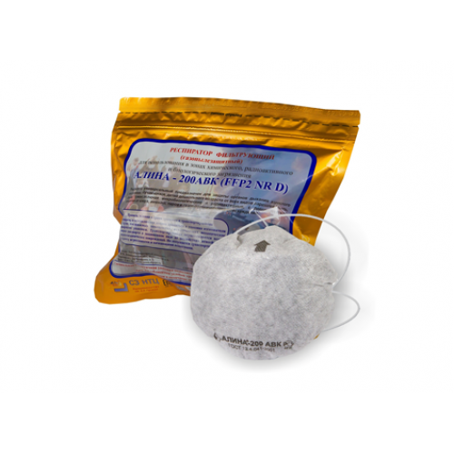
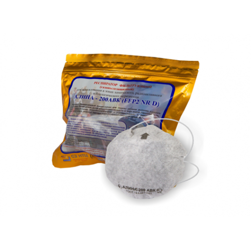
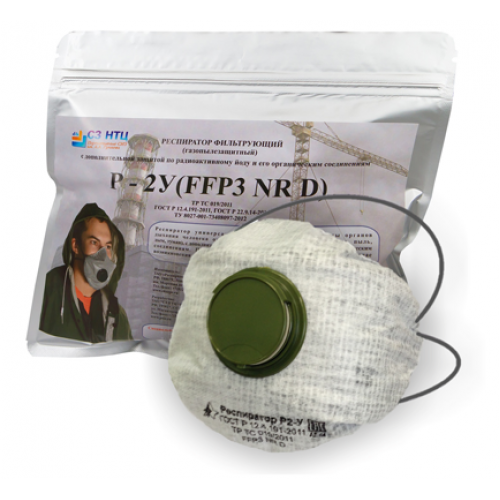
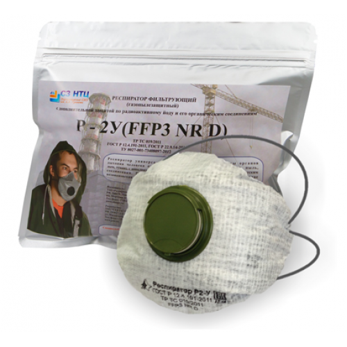
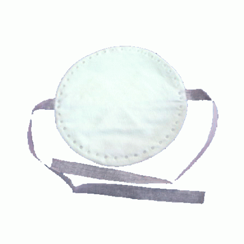
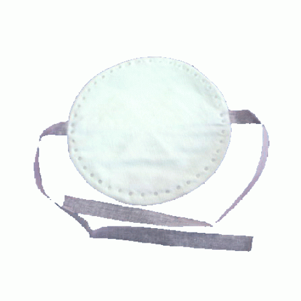

Добро пожаловать

Stalker shop
Каталог
Алина-200 АВК


Респиратор Алина-200 АВК с классом защиты ffp2 специально разработан для выхода из опасной зоны при чрезвычайной
ситуации (ЧС). АЛИНА 200АВК рекомендован для школ, детских садиков и других образовательных учреждений.
Это самый распространенный респиратор.
1000р.
Подробное описание товара
Респиратор Р-2

Респиратор Р-2 предназначен для защиты органов дыхания от радиоактивной и грунтовой пыли.
1500р.
Подробное описание товара
Респиратор Р2-У


Портативный респиратор Р-2У предназначен для выхода населения из опасной зоны при ЧС на радиационно-опасных объектах.
2000р.
Подробное описание товара
Респиратор У2-К

Респиратор У2-К предназначен для защинов дыхания от различных видов пыли
1800р.
Подробное описание товара
Респиратор ШБ-1 Лепесток 200


Фильтрующий респиратор ШБ-1 "Лепесток-200" предназначен для индивидуальной защиты органов дыхания человека от различных
видов пыли и аэрозолей
1300р.
Подробное описание товара